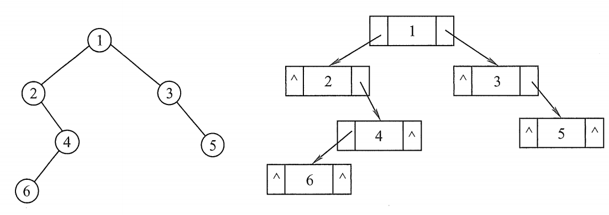

树与二叉树与森林|数据结构Ⅲ
P.S. 封面图这种树称作|分形树
- 图源：Reddit
树|Tree
树的定义
树（Tree） 是 个结点的有限集。 当 时称为空树。
在任意一颗非空树中：
- 有且仅有一个特定的称为 根（Root） 的结点；
- 当 时，其余结点可分为 个互不相交的有限集 ，其中每一个集合本身又是一棵树，并且称为根的子树。
可见，树结构是一种非线性存储结构，存储的是具有“一对多”关系的数据元素的集合。
树的定义中又用到了其自身，这表面树是一种递归的数据结构。此外，树同时也是一种分层结构，具有如下两种特点：
- 树的根结点没有前驱，初根结点外的所以结点有且仅有一个前驱；
- 树中所有结点可以有零个或多个后继。
树中的某个结点（除根结点外）最多只和上一层的一个结点（即其父结点）有直接关系，而根结点没有直接上层结点。所以：
♾️在 个结点的树中，有 条边。
基本术语
下图是数据结构中一颗树的示意图，我们将结合这幅图对树的一些基本术语进行介绍。

结点关系
考虑结点，我们有根结点 到结点 的唯一路径：
该路径上，除了 本身外的任意一个结点，都是 的祖先。
如， 是 的祖先，而 称为 的子孙。
结点 与 直接相连，我们称 是 的双亲，也是 的父结点(parent)；而 是 的孩子。
有相同双亲的结点称为 兄弟(sibling)。如 都是 的兄弟结点。
结点的度
度：某个结点的子树的数目就是该结点的度
简单来说，一个结点孩子的个数就是它的度数。如图中 的度为 3，因为 是它全部的孩子，一共 3 个。
定义：一棵树中结点的最大度数就是这棵树的度
图中， 的度是 2， 的度是 1， 的度是 2， 的度是 3，…
全部列举完毕后，发现这棵树的所有结点中，度数最大是 3，所以我们就称这棵树的度是 3。
应区别于无向图中的度、有向图中的出度和入度。
树的度并不是与结点连接的边的条数，而是向下“发射”的条数。
我们称 度大于 0 的结点为 分支结点（又称 非终端结点）；度为 0 的结点为 叶子结点（又称 终端结点）。
在分支结点中，每个结点的分支数就是其度数。
高度、深度与层次
结点的层次：从根结点开始，根结点所在的层次为第一层，根的孩子结点为第二层，以此类推。 双亲在同一层的结点直接互为 堂兄弟。（如图中的）
结点深度：对任意结点， 的深度表示从根结点到 的路径长度。
结点高度：对任意结点 ，叶子结点到 的路径长度就是 的高度。
树的高度/深度：一棵树中某结点的最大层数就是树的深度，也称为高度。
注：有的教材定义一棵树中某结点的最大深度就是树的深度/高度。这使得根结点的深度是 0 ，用上面的图示为例，在这些教材里这棵树的深度是3，而此处我们定义这棵树的深度是4，与其层数相同。
有序树与无序树
有序树：规定树中结点的各子树从左到右的次序唯一，不能互换的树为有序树。
如上图中，将 与 的位置互换得到的树，与之前的树属于不同的有序树。
无序树的定义则与有序树相反，允许左右子树的互换。
路径与路径长度
树中两个结点之间的路径是由这两个结点之间所经过的结点序列构成的，而路径长度就是路径上经过的边的个数。(不是结点个数！)
需要注意的是，因为树中的分支是有向的，均是从双亲指向孩子（这也是我们对度的定义与无向图不同的原因），所以树中的路径均是从上至下的，不存在两个孩子之间的路径。
应区别结点之间的路径长度与 树的路径长度 的区别。
树的路径长度 是指树根到每一个结点的路径长度之和！
树的路径长度还应该与哈夫曼树的带权路径长度作区分！
叉树
应当注意，事实上 叉树是另一种树形结构的数据结构
叉树要求每个结点最多有 棵子树。即不存在度数大于 的结点。
此外， 叉树具有有序性，每一层的结点换序后就是另一棵树。用二叉树举例，二叉树的左右子树不能换序。
与树类似， 叉树也是以递归形式给出的定义，与树不同，有：
| 度为 的树 | 叉树 |
|---|---|
| 任意结点度数最多等于 | 任意结点度数最多等于 |
| 至少有一个结点的度等于 | 允许所有结点的度都小于 |
| 不允许为空树 | 可以为空树 |
| 有序树的次序仅相对孩子而言，若某结点只有一个孩子，则该孩子无次序之分 | 就算仅有一个孩子，也许区分属于第几位，比如二叉树中只有左或只有右孩子是不同的 |
树的性质
结点数、边数与度数
♾️在有 个结点的树中，一定有 条边。
♾️ 用记号 表示一棵树中度为 的结点个数， 表示结点总数。
则有：
- 结点总数：
- 总分支数：
- 数的边数 = 总分支数
再结合前面的性质： 个结点的树中，一定有 条边。我们就有：
该性质经常在相关选择题中进行考察，应当灵活掌握。
结点数的最大最小值
♾️度为 的树中，第 层上最多有 个结点（）
【推导】如果一棵树的度为，结点最多时，一定除了叶子结点外，所有结点的度都是 。也就是说，每个非终端结点都有 个孩子。于是：
第一层，有一个结点，即是根结点；
第二层，有 个结点，都是根结点的孩子；
第三层，有 个结点，第二层的每一个结点分支出 个孩子结点，所以共 个；
以此类推，第 层有 个结点。
♾️ 高度为 ，度为 的树中，最少有 个结点
【推导】要使得结点最少，当且仅当除了叶子结点和限定一个结点的度为 外，其余结点的度都为置 1. 如下图所示：

这样可以使得结点数最小，不难得出此时结点数为.
♾️ 高度为 的 叉树中，最多有 个结点 （）
【推导】自然，当每个结点都尽最大努力分支子树时，结点的个数才可能最多。
与上一个问题不同的是，我们限制了高度。所以，把上面的结论拿出来用：
第一层，有一个结点，即是根结点；
第二层，有 个结点，都是根结点的孩子；
第三层，有 个结点，第二层的每一个结点分支出 个孩子结点，所以共 个；
…
第 层，有 个结点；
…
第 层有 个结点。
利用等比数列求和公式，把它们相加：
高度的最大最小值
♾️ 具有 个结点的 叉树的最小高度是
【推导】当每一层都尽最大努力塞下更多结点时，层数/树的高度才可能达到最小。也就是每个结点都分支 个子树时成立。所以把上面的公式求反即可。
注：严格来说，此处应当利用不等式来加以证明，后面介绍二叉树的性质时我们就将利用不等式来说明。
♾️ 有 个结点且度为 的树，其高度的最大为
【推导】和我们求解最少结点数的思路一致，考虑下图这样的极端情况：
只需把条件反过来，就可以求解出高度最大应为.
二叉树|Binary Tree
二叉树的定义
二叉树是 叉树的一种。与前面我们介绍的 叉树一样，二叉树另一种树形结构，并且和度为 2 的树是不同的。
二叉树的子树有左右之分，次序不能任意颠倒，并且在介绍 叉树时我们也指出，这与有序树也不同。
二叉树有如下 5 种基本形态：

二叉树的种类
满二叉树
一棵高度为 且含有 个结点的二叉树称为满二叉树。即树中每一层都含有最多的结点。如下图(a)所示，满二叉树的叶子结点都集中在二叉树的最后一层，并且除了叶子结点以外，所有结点的度都为2。

完全二叉树
完全二叉树就是对应相同高度的满二叉树缺失最下层右边的一些连续结点。
即对于一棵高度 ，结点数 的二叉树，当且仅当每个结点都与满二叉树的编号 的结点一一对应时，我们称之为完全二叉树。如上图(b)所示。
完全二叉树拥有许多性质，我们将在后面《二叉树的性质》 中一一介绍。
斜二叉树
斜树：所有的结点都只有左子树的二叉树叫左斜树。所有结点都是只有右子树的二叉树叫右斜树。这两者统称为斜树。
二叉树的性质
普通二叉树的性质
对于一棵任意的二叉树，之前我们介绍树的性质中出现的结论在此处也都成立。
- 非空二叉树上第 层最多有 个结点（证明详见树的性质部分）
- 高度为 的二叉树最多有 个结点（证明详见树的性质部分）
- 非空二叉树的叶子结点数等于度为 2 的结点数加1。即.
第三个结论十分重要，事实上度数、结点数与边数的结论我们已经在树的性质部分表述清楚，而这里的结论是那个结点在二叉树上特有的推导。
结点数=边数+1，于是有
结点数=所有度的结点个数之和，于是有
联立上式即可得出性质3的结论：
基于性质3，我们又衍生出下面几种二级结论。
♾️设二叉树有 个结点，且 ，则不可能存在 个度为 1 的结点
【推导】利用性质3，将 代入到 中，解得：.
这说明当一个二叉树有偶数个结点时，其度为 1 的结点个数不可能为偶数。同理我们可以证明，一个二叉树有奇数个结点时，其度为 1 的结点个数不可能为奇数。
♾️一棵有 个结点的二叉树采用二叉链存储结点，空指针个数为
【推导】采用二叉链存储结点时，只有叶子结点以及只含有一个孩子的结点才可能产生空指针。其中，由于叶子结点无孩子，所以一个叶结点产生 2 个空指针，而只有一个孩子的结点产生一个空指针。
换句话说，空指针的个数等于。
利用性质3，可以解得.
♾️一棵有 个结点的树，其叶结点个数为，将其转化为二叉树后，求该二叉树无右结点的结点个数
【推导1】首先应该知道如何将一棵树或者森林转化为二叉树。这将在我们后续的学习中再提到。
把树转化为二叉树简单来说就是按照“左孩右兄”的原则构建二叉树。使得二叉树中的每个结点的左子树是其原来那棵树的孩子结点，右子树是其原来的兄弟结点。
那么对于本题来说，该二叉树没有右结点的结点，就对应原来的树中没有兄弟结点的结点，也就是包括原来度为 1 的结点和原来度为 0 的结点。
理解这一点之后，我们利用性质3，就有了
无右结点的结点树等于：.
【推导2】还有另一种思考方式。充分利用“左孩右兄”的性质，原本那棵树的根结点一定没有兄弟，所以转化后会产生一个结点没有右结点。而所有非终端结点（也就是有孩子的结点），这些结点的孩子都会连成一串，而这一串中只有最后一个孩子没有右结点。
也就是说，一个非终端结点往下分支之后一定会产生一个没有右结点的结点。
于是，没有右结点的结点数等于非终端结点+1。
即.
【推导3】直接考虑极一种特殊情况（相当于特殊值法），如下图所示：
根据该图就能直接写出.
♾️ 考虑二叉树。若某二叉树只有度是 0 和度是 2 的结点，树高为 ，则该二叉树的最少结点数是.
【推导】要使结点数最少，则只需每一层都有且仅有两个结点即可，这满足了除叶子结点外度只有2。该情况正如下图所示：

从而可以计算得出
♾️ 考虑二叉树。若某二叉树只有度是 0 和度是 2 的结点，结点总数 ，则该二叉树的最大高度应该是.
【推导】和我们求解最少结点数的思路一致，考虑下图这样的极端情况：
只需把条件反过来，就可以求解出高度最大应为.
完全二叉树的性质
完全二叉树因为与满二叉树的编号一一对应，而满二叉树是一种很特殊的二叉树。所以，完全二叉树即使是通过编号，就能推导出不少性质。
我们有：
- 若编号为 的结点有 ，则该节点是分支结点（非终端结点）
- 完全二叉树的叶子结点只可能在最后两层出现
- 如果有度为 1 的结点，那么有且只有一个，并且它没有右孩子
- 如果按序编号后，第 个结点只有左孩子，那么任何序号在 之后的结点都是叶结点
- 若结点总数 为奇数，则每个分支都有左右孩子；否则，编号最大的分支结点 只有左孩子，其余的结点左右孩子均有.
- 性质5还指出，完全二叉树中度为 1 的结点只有两种情况，即
- 如果规定编号从 开始（下同），则 号结点的双亲是.
- 若 为偶数，那么它是 的左孩子；否则它是双亲 的右孩子
- 当 时，结点 的左孩子编号是，否则无左孩子
- 当 时，结点 的右孩子编号是，否则无右孩子
- 结点 所在的层次为
♾️高度为 的完全二叉树最少有 个结点，最多有 个结点
【推导】根据我们对树的性质的探究以及对二叉树性质的探究。
当树高为 时，二叉树最多有 个结点，高 时，最多就有 个结点。
再由于完全二叉树在最后一层（第 层）最多有结点 个，最少有1个。
从而得到：
上式也可以写成：.
♾️ 具有 个结点的完全二叉树的高度为 或
【推导】根据上一问的结论：
于是. 因为树高是正整数，所以就有。
同理，利用另一个结论（其实只是同一个意思的不同写法）就有。
通过该推导，我们也就知道某个结点 所在的层次是，即性质11.
♾️完全二叉树有 个结点，则其叶结点的个数是多少？
【推导1】常规思路是，由于 完全二叉树的叶结点只可能出现在最后两层。所以先利用上一问的结论，得出这棵树的树高.
因为完全二叉树的倒数第二层并往上都是满二叉树，所以计算得知前 层的结点个数，得到.
然后我们就能得到最后一层的结点数是 。
当最后一层结点数不满时，倒数第二层右边没有孩子的结点也是叶子结点，所以，还需要根据最后一层的结点数相比满二叉树少了多少个，然后再除以2得到倒数第二层的叶结点个数，最后再相加。
【推导2】利用完全二叉树的性质1，编号为 的结点是最后一个分支结点，其后的结点都是叶子结点。所以叶结点数就是.
【推导3】利用性质6及二叉树结点数的关系，欲求叶结点个数 只需将下式联立：
得：
接下来根据给定的 的奇偶性，选取合适的 即可（必须要使得 为整数）
♾️完全二叉树有 个叶子结点，则总的结点的个数最多是多少？
【推导】本题恰好与上一题相反。考虑到上一题中“推导1”的常规思路过于繁琐，且极度依赖于题目中所给的数据，所以这里不再阐述此类方法。
直接利用二叉树度与结点数的关系，我们直接可以得出：
根据性质6， 可以取1，也可取0，为了使 最大，直接取 即可。故.
二叉树的存储
顺序存储
二叉树的顺序存储是指用一组地址连续的存储单元依次自上而下、自左到右存储完全二叉树上的结点元素。即将完全二叉树上编号为 的结点元素存储在一维数组下标是 的位置。（此处假设数组从1开始）
根据二叉树的性质，完全二叉树和满二叉树是最适合采用顺序存储的，并且树中的结点序号可以唯一反映结点间的逻辑关系，能最大可能地节省存储空间。
而对于一般的二叉树，为了让数组下标能反应逻辑关系，只能实际没有结点的位置通过填充空结点的方式维持逻辑结构，这使得在最坏情况下，高度为 并且只有 个结点的树（其实就是上面我们介绍的斜二叉树）利用顺序存储需要 个存储单元。
求解任意两个结点 的公共祖先结点
链式存储
由于顺序存储的空间利用率较低，所以二叉树我们一般都采用链式存储结构。
对于链式二叉树，可使用双链表的形式对其进行映射，示意图如下：

于是，可以很轻易地建立相应的结构体实现构建：
1 | typedef struct BiTNode{ |
前面我们已经证明： ♾️一棵有 个结点的二叉树采用二叉链存储结点，空指针个数为
此处，为了便于后续编写程序的统一性和完备性，这里我们将采用 C++的class类模板创建的方式对二叉链表形成的二叉树进行构建。
1 | // 二叉树 基类 |
获取二叉树高度
定义树的高度（或 深度）是树中结点的最大层数
根据树的高度的定义，当一棵树是空树时，高度为0；
当一棵树有且只有一个节点（其左右孩子都是空）时，该节点正好是一个叶子节点，并且该树的高度为1；
否则，一棵树的高度等于其左右子树的高度再加上该树根节点自身的1个单位的高度。
于是可以总结得出：
显然，可将一棵树高的问题分解为左右两颗子树的子问题。
这种把大问题转化为同样且独立的小问题并求解的算法思想就是分治算法
结合二叉树独特的性质，可以通过递归的方式实现：
1 | template<class elementType> |
获取二叉树叶子结点
定义没有子女结点（度为0）的节点称为叶子结点
1 | template<class elementType> |
二叉树的遍历
二叉树的遍历是指按照某条搜索路径访问树中的结点，使得每个结点均被访问且只访问一次。
由于二叉树是一种非线性结构，每个结点都有可能有两颗子树，所以需寻求一种规律，使得二叉树上的结点能排列在一个线性队列中，进而便于遍历。
由二叉树的递归定义可知，遍历一棵二叉树需要决定对其根结点 、左子树 和右子树 的访问顺序。于是我们可以组合得出以下三种遍历算法：
- 先序遍历（）（PreOrder）
- 中序遍历（）（InOrder）
- 后序遍历（）（PostOrder）
以下图中的二叉树为例，我们可以从图中的序号 1 开始，跟着虚线箭头观察一次完成的遍历过程。其中，向下的箭头表示更深一层的递归调用，向上的箭头表示从递归调用中推出返回。

一次完整的遍历，如果我们只按照图中三角形的顺序依次输出结点，那这种遍历就是先序遍历，按照圆形的顺序就是中序遍历，按照方形的顺序就是后续遍历。
对于图中的这棵树，有：
- 先序遍历：
ABDEC - 中序遍历：
DBEAC - 后序遍历：
DEBCA
遍历的递归实现
以中序遍历为例，通过二叉树的递归定义，可设计中序遍历的流程如下：
- 若二叉树为空，则什么也不做；
- 否则：
i. 中序遍历左子树；
ii. 访问根节点；
iii. 中序遍历右子树。
为了代码可读性和方便使用，此处我采用友元函数对<<运算符重载，使得iostream可以直接中序输出自定义的二叉树类。具体代码如下：
1 | template<class elementType> |
不管采用哪种遍历算法，每个结点都访问且只访问一次，故其时间复杂度为.
在利用递归算法实现遍历时，递归工作栈的深度也恰好就是树的深度，所以最坏情况下，斜二叉树使得结点有 个的二叉树其高度也是，故空间复杂度是.
遍历的非递归实现
通过对访问结点流程的熟悉与把握，事实上我们可以利用栈来实现二叉树的非递归方法遍历。
我们先给出先序遍历和中序遍历的非递归实现。
而后序遍历的非递归实现相比之下较有难度，因为我们需要在 左孩子在右孩子之前访问结束才能访问根结点 的前提下使得左右孩子都被访问。
为了区别于上面的递归实现，这里我们就不再使用友元函数处理了。
1 | template<class elementType> |
后序非递归遍历二叉树是先访问左子树，再访问右子树，最后访问根结点。
由于有着左子树和右子树的入栈出栈过程，所以不能直接分别出什么时候是右子树访问完毕（也就不知道当前的根结点是否应该输出），所以需要增设一个辅助指针来指示。
1 | template<class elementType> |
层次遍历及其实现
按照完全二叉树编号的顺序进行的遍历就是层次遍历。
即对二叉树从上到下每一层从左到右依次进行遍历。
可以想到，欲实现层次遍历，应当借助队列。将二叉树的根结点入队，然后出队，访问出队结点，若它有左子树，则将左子树的根结点入队，若它有右子树，右子树的根结点也入队。然后继续出队，如此反复，直到队列为空。
例如，下图中的树，其层次遍历的结果是 : 5 1 7 2 4 6 3
利用队列的特性，我们有下图所示的入队出队情况：

代码如下：
1 | template<class elementType> |
注：若欲实现从下至上，从右往左的层次遍历，只需在原有的层次遍历基础上，出队后不马上输出结点信息，而是将其入栈。待所有结点访问完毕之后，从栈中依次出栈并输出结点信息即可。
因为层次遍历与层数直接联系，所以我们也可以通过对层次遍历的算法进行适当修改，就能实现，如：
- 求某层的结点个数
- 求二叉树的最大宽度
- 求二叉树高度的非递归算法（高度取决于层数）
- 判断某棵树是否为完全二叉树【思想：左右子树即使为空也入队，若最终队列里的空结点之后还有非空结点，则不是完全二叉树】
遍历序列的相关性质
根据各类遍历得到的序列，我们总结出如下性质：
- 先序序列+中序序列可以唯一确定一棵二叉树
- 后序序列+中序序列可以唯一确定一棵二叉树
- 层序序列+中序序列可以唯一确定一棵二叉树
- 先序序列+后序序列不可以唯一确定二叉树【注意】
总结就是，有中序序列的必然可以唯一确定一棵二叉树。
下面是一个通过先序序列和中序序列确定的二叉树示例，其中，先序序列：；中序序列：.

因为先序序列的第一个结点 一定是根，所以我们把 作为整棵树的树根，然后在中序序列中找到，则 的左边结点的全体构成左子树，右边结点的全体构成右子树，如图(a)所示。进而，我们递归地又把左边和右边看成构建子树的子问题，如此进行下去。最终就能得到一棵确定的树。
在下一节，我们将介绍如何利用 C++ 实现给定先序序列与中序序列的建树。
另外，涉及二叉树遍历序列的性质还有：
♾️若某叶子结点是二叉树某子树中序序列的最后一个结点，则它也是该子树前序序列的最后一个结点
【推导】设二叉树中序遍历的最后一个结点为， 一定是从根开始沿右指针走到底的结点。
- 若 不是叶结点（说明它左子树非空），则前序遍历的最后一个结点在 左侧；
- 若 是叶结点，则前序与中序遍历的最后一个结点都是它。（得证）
♾️中序遍历中，结点 在 之前的条件是： 在 左方
♾️后序遍历中，结点 在 之前的条件是： 是 子孙
♾️先序遍历中，结点 在 之前的条件是： 是 祖先
♾️采用 后序遍历 可以找到某个结点 到其祖先 （甚至到根结点）的路径
【推导】在后序遍历的编程实现中不难发现，我们在回退访问子树的根结点 的时候，已经将其子孙访问完毕了，那么此根结点 必然是从某结点 往上回退的祖先。
所以，只需在后序遍历算法访问根结点时，加入判断：
- 如果递归访问得到目标结点 在 的子树中，则输出；否则不予处理。
通过这样的方式即可输出从目标结点 从下往上地输出其祖先结点的目的。该操作也就输出了从 经过 直到根结点的路径，也是唯一路径。
在下一节的 二叉树其他基本操作 中，我们也将利用 C++ 完成此代码的编写
♾️给定一棵满二叉树（结点值均不同）及其先序序列，求它的后序序列
【推导】对于一般的二叉树，已经指出先序序列和后序序列无法唯一确定一棵二叉树。
而满二叉树则不同。
假设先序序列为，后序序列为.
则满二叉树的先序序列的第一个结点就是后序序列的最后一个结点，即。
不仅如此，满二叉树任一结点的左子树和右子树的结点数都相同，即 与 个数相等，且分别构成根结点 的左子树序列和右子树序列。
同样的，后序序列 也预留有两个位置： 与 分别存放左子树和右子树。
也就是说，我们要把先序序列划分出来的两个部分中，左边的部分与后序序列划分的左边对应，要把右边的部分与右边对应。
这个对应过程其实就是求先序序列转后序序列的过程。这个问题是本问题的子问题。
所以我们可以采用递归的方法实现。
♾️ 非空树的先序序列与后序序列完全相反，当且仅当二叉树仅有一个叶结点（高度等于结点个数）
【推导】先序序列与后序序列完全相反，即是 （后序序列反向），那么树就只有根结点或者根结点只有左子树或右子树。以此类推，其子树也有同样的性质。
进而，树中所有非叶结点的度均是1。
也就是. 再结合 可解得
即二叉树仅有一个叶结点。
二叉树仅有一个叶结点也等价于其形态是高度等于结点个数，是一条链树（如斜二叉树）。
♾️ 非空树的先序序列与后序序列完全相同，当且仅当二叉树仅有一个根结点
【推导】先序序列与后序序列完全相同，即是 ，当且仅当 都为空才能成立。此时，二叉树仅有一个根结点。
♾️ 已知某结点数为 的二叉树的先序序列，求其可以确定多少种树？
【推导1】假设给定的先序序列为，且 是结点数为 的该先序序列可以导出的二叉树种数。我们有. 即空树和只有一个结点的情况，树的种类只有一种。
那么首先，显然 是树的根结点，而 之后的序列 一分为二之后，就是 对应的左子树先序序列和右子树先序序列。
- 当时，问题划归为两个子问题，种数为。左右两颗子树的种数的乘积。
- 当时，问题划归为两个子问题，种数为。左右两颗子树的种数的乘积。
- 当时，问题划归为两个子问题，种数为。左右两颗子树的种数的乘积。
- 如此下去，取遍所有情况。
则：
这就是数论中著名的卡特兰数的递推定义之一。有：.
卡特兰数的相关性质与证明见本站文章：算法与组合数学：卡特兰数
【推导2】考虑二叉树先序遍历和中序遍历的递归算法。
先序遍历和中序遍历都一样，是不断往下遍历的过程，区别是先序遍历遇到根结点就先输出，而中序遍历遇到后先将其入栈，处理完左子树后再考虑根结点。
也就是说，如果我们给定一串先序序列，相当于也就给定了遍历过程中根结点的流程。而不同的树的构造会使得中序遍历的输出顺序不一样。
将这个过程转换一下，正是一个入栈次序和出栈次序的问题。
一个入栈次序可以产生多少种出栈次序，等价于一个先序序列可以产生多少种中序序列，而一对先序序列+中序序列又唯一确定一棵树。所以，树的种数就是出栈次序的种数。
于是，利用我们在学习栈的时候给出的卡特兰数的结论，本问题的答案就是
入栈与出栈次序的相关性质与证明见本站文章：堆栈与队列及其应用|数据结构Ⅱ
其他基本操作
二叉树的复制
提到复制可能最容易想到的方法就是使用=进行赋值。比如BinTree<int> *new_tree = old_tree;
然而这并不是完全的复制，不如说这仅仅是又建立一个指针指向了原来的二叉树。也就是说，用new_tree做的任何操作都会同步影响到old_tree，这也即是所谓浅拷贝的一种表征形式。
清楚上述思想之后，我们注意到真正需要实现的是深拷贝，即构造完完全全与旧树相同的新树对象实例，而不是指针。于是，编程思路也清晰了，只需要约定一个遍历规则，依次进行复制即可。
1 | template<class elementType> |
二叉树的释放
容易想到，只要将根结点的左右子树的指针域置空，那么从用户看来这颗树便只有一个结点，如果再将该结点删除，似乎就完成了二叉树的删除。
而事实上，这是一种“掩耳盗铃”的“手法”，二叉树在存储空间里依然存在并一直占用空间（直到程序完全运行结束后，操作系统才主动释放）。那么，如何进行内存释放呢？这与二叉树的复制类似，我们只需要递归地从叶子节点开始逐一释放即可。
在c++的类中，delete操作可以为我们释放一个对象实例，这个操作发生前，会运行析构函数。因此可以编写析构函数如下实现整个二叉树的释放：
1 | template<class elementType> |
层次遍历用于建树
下面我们来实现基于层次遍历思想的建树策略。其实就是完全二叉树的链式建立。
给定数组 args[n] ，实现按照完全二叉树的排序方法依次存入二叉树中。首先将根结点入队，然后出队，若该结点为空，则出队，并将第一个元素作为根结点存入；如果当前结点没有左子树，则新建左子树，并将空的子树入队，右子树同理。
1 | template<class elementType> |
中序+先序序列建树
在前面的学习中，我们已经介绍了如何通过中序序列和先序序列构造一棵二叉树。在这里，我们利用编程语言实现之。
首先假定某待建二叉树的中序序列与先序序列分别存放于数组 中。
算法流程如下：
- 根据先序序列确定树的根结点；
- 根据根结点在中序序列的位置，划分出左子树与右子树应当包含的结点序列，（该序列同样也是左右子树的中序序列），用下标 表示划分出的子树结点序列在中序数组中的边界；
- 在先序序列中也划分出来，用于作为递归参数进行左子树和右子树的建树。
1 | template<class elementType> |
结点查找与路径输出
在 遍历序列的相关性质 一节中，我们已经分析了如何实现该算法。
在后序遍历回退访问子树的根结点 的时候，我们已经将其子孙访问完毕了，那么此根结点 必然是从某结点 往上回退的祖先。所以，只需在后序遍历算法访问根结点时，加入判断：
- 如果递归访问得到目标结点 在 的子树中，则输出；否则不予处理。
于是，得到该算法的递归求解思路：
1 | template<class elementType> |
当然，我们还可以结合后序遍历的非递归方法编写程序。
1 | template<class elementType> |
线索二叉树|Threaded BinaryTree
基本概念
在前面的学习中，我们不止一次的提到如下结论：对于 个结点的二叉树，在二叉链存储结构中有个空链域。
自然，我们为了更好地利用存储空间，是很不希望这些空域白白浪费的。
所以，结合实际需求，我们考虑，利用某个结点的空链域存放 在某种遍历次序 下该结点的前驱结点和后继结点的指针。而这些指针我们就称为线索，而加上线索的二叉树就称为线索二叉树。
显然，加入线索之后，不仅可以使得空链域得以利用，而且还加快了我们对二叉树结点查找的速度。
规定：若无左子树，则令其左指针指向其前驱结点，增设标志域 ltag 表明此过程。同理，若无右子树，则令其右指针指向其后继结点，增设标志域 rtag 表明此过程。标志域具体设置如下：
接下来，我们需要在原来二叉树类模板（作为基类）的基础上，建立派生类，即线索二叉树类：
1 | //线索二叉树 类 |
二叉树是逻辑结构，而线索二叉树是加上线索之后的链表结构，
所以它是二叉树在计算机中的存储结构，也是物理结构
二叉树的线索化
我们以中序线索二叉树的构建为例，实现二叉树的线索化。
手算时，我们只需写出二叉树按照某种遍历方法进行遍历得到的序列后，根据序列的次序，在图中依次用虚线进行标记即可。
一个示例如下图所示：

线索化的编程实现
我们可以定义指针 pre 始终指向当前读取的子树树根的前驱，然后再递归地依次遍历二叉树，遍历过程中根据前驱不断修改指针。
每次递归结束后应当把 pre 调整，以便下一次递归时不出错。
下面我们给出以中序线索化为例的程序，先序与后序的操作是类似的，只需将递归访问和指针调整的顺序修改即可。
在整个类中，为了区分线索树类型，我们还增设了一个标志位 id ，id 取不同值时表示当前这颗二叉树是哪种类型的线索二叉树。（其含义我们已在上面的线索二叉树类模板声明中给出）
1 | template<class elementType> |
去线索化的编程实现
我们还可以实现对线索二叉树的去线索化。
思路就是从根结点开始遍历二叉树，如果遇到 ltag 或 rtag 为1，说明对其进行了线索化，我们将其对应的左指针或右指针置空，然后把标志更改回 0 即可。
待更
线索树的快速遍历
同样以中序线索二叉树为例，当我们对某棵二叉树进行了中序线索化之后，可以对其进行更加快速的中序遍历。
因为中序序列的第一个元素是整个二叉树最左端最下方的结点，因此我们先将其找到。于是通过其 rtag 标志位，依次往下访问其后继即可。
我们下面通过对线索二叉树类继承的基类纯虚函数 InOrder() 成员函数进行实现。
1 | template<class elementType> |
线索树的性质
通过前面我们对二叉树线索化的流程，我们可以总结出二叉线索树的如下性质：
- 中序线索树的某结点 有右孩子，则其后继结点是它右子树的最左下结点（不一定是叶结点）；
- 中序线索树的某结点 有左孩子，则其前驱结点是它左子树的最右下结点（不一定是叶结点）；
- 并不是每个结点都能通过线索直接找到其前驱和后继！
关于第三点，我们还能展开往下讲解。
- 在先序线索树中，查找某结点的后继较为简单，而查找其前驱则需要知道其父结点。
- 在后序线索树中，查找某结点的前驱较为简单，而查找其后继则需要知道其父结点。
- 后序线索树的遍历仍然需要栈的支持【重要】
树与森林|Forest
树的存储结构
双亲表示法
双亲表示法采用一组连续的空间存储每个结点，同时在每个结点中增设一个伪指针，用于指向某个结点的双亲结点处于数组的哪个位置。规定用 0 表示根结点下标，其伪指针域为 -1.
双亲表示法的一个示例如下：
该存储结构利用了每个结点（除根结点外）只有唯一双亲的特点，可以很快得到每个结点的双亲，但是求孩子结点却需要遍历整个结构。
注：二叉树属于树，所以树的存储结构都能用来存储二叉树；但是一棵树却未必都能用二叉树的存储结构进行存储
孩子表示法
孩子表示法将每个结点的孩子结点都用单链表链接以形成一个线性结构。有 个结点就有 个孩子链表，其中叶子结点的孩子链表为空。
该存储结构可以方便寻找子女，而寻找双亲则需要遍历。

孩子兄弟表示法
孩子兄弟表示法又称二叉树表示法，即以二叉链表作为树的存储结构。
每个结点包含三部分内容：结点值、指向结点第一个孩子的指针、指向下一个兄弟结点的指针。
如上图(b)所示。
孩子兄弟表示法遵循着 “左孩子、右兄弟”的规则，可以将一棵树转化为二叉树进行存储。
沿着右子树（即指向兄弟结点的指针）找下去即可找到所有兄弟结点。
由于根结点没有兄弟，所以其右子树为空。这表明，树转换为二叉树后，此二叉树没有右子树。
孩子兄弟表示法比较灵活，易于查找孩子结点，但是查找双亲结点就比较繁琐。
在 二叉树 的专栏学习中，我们给出了这样的性质：
若一棵树的非叶结点数为 ，则将其转换为二叉树之后的右指针为空的结点数是
森林 就是多棵树构成的集合。
如果我们把森林中每棵树的根结点都视为兄弟结点，则森林也可以用类似于树的存储方式进行存储。
将树转换成二叉树的方法我们前面已经指出，但对于其画法还有一些“鸡肋”的捷径用于手画。
在原本的树中作如下处理：
- 在兄弟结点之间加一条线；
- 对每个结点只保留它与它第一个孩子（最左边的孩子）的连线，其余线都去掉；
- 以树根为轴心，将上述处理后得到的图像顺时针旋转 45度。
对于森林，则先将每棵树转化为二叉树，然后再把根结点视为兄弟，依次作为第一颗树的右子树加入二叉树行列，即可得到森林的二叉树。

二叉树转换为树或森林是唯一的
树和森林的遍历
树的遍历
树的遍历主要分为 先根遍历 和 后根遍历。此外还有层次遍历，这与二叉树完全一致。
- 先根遍历就是在树非空时，先访问根结点，然后再依次遍历其各子树，对其子树的遍历也按照此规则。对一棵树的先根遍历得到的结果相当于其转换得到的二叉树的先序序列。
- 后根遍历就是在树非空时，先访问根结点的各子树，然后再访问其根结点，对其子树的遍历也按照此规则。对一棵树的后根遍历得到的结果相当于其转换得到的二叉树的中序序列。
森林的遍历
森林的遍历有 先序遍历 和 中序遍历。
- 先序遍历就是按每棵树从左到右依次先根遍历访问树。对应二叉树的先序序列。
- 中序遍历就是按每棵树从左到右依次后根遍历访问树。对应二叉树的中序序列。
部分教材也将森林的中序遍历称为后根遍历。事实上都是指同一种遍历。
在上面我们给出的对应图示的森林里，
先序序列是：；中序序列是：
三者的对照关系如下表所示：
| 树的遍历 | 森林的遍历 | 二叉树的遍历 |
|---|---|---|
| 先根遍历 | 先序遍历 | 先序遍历 |
| 后根遍历 | 中序遍历 | 中序遍历 |
森林的性质
- 高度为 的满二叉树对应的森林所含的树的个数是（完全二叉树则不一定成立）；
- 一个森林中有 个非终端结点，则其对应的二叉树中有 个右指针为空的结点（已在树的性质一节中给出证明）；
- 森林中叶结点的个数等于其对应的二叉树中左指针为空的结点数；
- 若一个森林含有 条边， 个结点，则其包含的树的棵数为. 证明如下：
假设森林中存在 棵树，则每一棵树的边数和结点数都有，其中
则：
即，证毕。
其他树|Other Tree
我们尽量简述了数据结构中最常见的树，以及相关的算法与代码。事实上，受限于篇幅，还有很多树并没有介绍，比如：
- 字典树
- 二叉排序树
- 红黑树
- 平衡二叉树
- AVL 树
- 伸展树
- 替罪羊树
- B树
- 哈夫曼树
- 最小生成树
- …
可移步到下面的文章中继续深入。